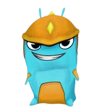

Personajes Principales
Eli Shane: Llegado recientemente a Slugterra, planea convertirse en el mejor lanzador de todos los tiempos. Al igual que sus predecesores tiene una gran conexión con las babosas y un gran talento para comunicarse con ellas. Su mejor amigo es Burpy, una babosa infierno
Pronto Germitopo: Es la primera persona que conoce a Eli cuando llega a Slugterra, es un topoide con características humanas, es experto en la geografía e historia de Slugterra, aunque a veces sus conocimientos hacen que se meta en bastantes problemas. Es un aventurero y caballero o al menos eso dice él.

Trixie Sting: Es una chica valiente, joven, inteligente, astuta y con un gran ojo para la filmación, Trixie fue la única persona que quiso enfrentarse a los males que amenazaban su caverna. Siempre lleva su cámara para poder mostrar lo que sucede en Slugterra, lo bueno y lo malo. Se une a Eli luego de ayudarlo en una competencia y de salvarle la vida.

Kord Zane: Es un trol de las cavernas, aunque parece rudo esconde un gran corazón.Él le explicó a Eli algunos datos sobre los duelos de babosas. Es un experto en la reparación de mecabestias y el diseño de armamentos. Le gusta mucho hacer bromas pero es un gran lanzador.
Babosas Principales
En esta sección podrás encontrar información sobre las babosas de Bajoterra, su forma y sus ataques, todo lo que necesitas para ser el mejor luchador de Bajoterra. Aquí están las babosas de Bajoterra más comunes.
| Tipo de Babosas | Forma Principal | Transformación |
|---|---|---|
| Infierno | ||
| Electro Shock | ||
| Sanadora | ||
| Carnero | ||
| Torpedo |  | |
| Demoledora |